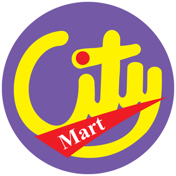
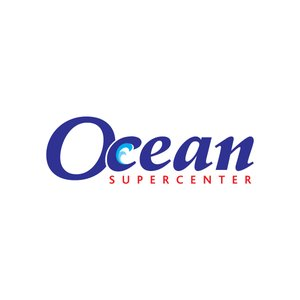

Digital growth strategist, systems thinker, and nine-year student of how audiences behave online.
I'm Win Myat Ko Ko, a digital growth strategist based in Bangkok, working at the intersection of audience intelligence, performance marketing, and strategic communication.
My career started in agency life at Nexlabs, where I spent nearly eight years building and leading performance marketing programs for brands across Myanmar and the broader APAC region. What I learned there about audience behavior, media ecosystems, and the discipline of connecting strategy to measurable outcomes became the foundation for everything since.
The chapter I'm most proud of is the work I've done helping grow two Asia-focused climate and energy media publications from early-stage platforms into high-reach outlets cited in ministry briefings and major international media. In a lean team, we built the full digital ecosystem: SEO, newsletters, podcasts, paid distribution, and audience segmentation. That is what meaningful digital work can look like when strategy and execution are aligned.
I think in systems rather than isolated campaigns. I'm drawn to work that has a larger purpose: public awareness, policy influence, regional impact. I believe the best digital strategy is fundamentally about clear thinking about people: how they find information, what earns their trust, and what motivates them to act.
Currently, I'm deepening my research and analytical work, with a particular interest in AI search optimization, audience intelligence for impact organizations, and the evolving relationship between data and narrative in digital communication.
Download CVBrands and institutions across Southeast Asia, Singapore, and global markets.


Open to strategic consulting, advisory, and research collaborations across Asia and APAC.
Let's talk